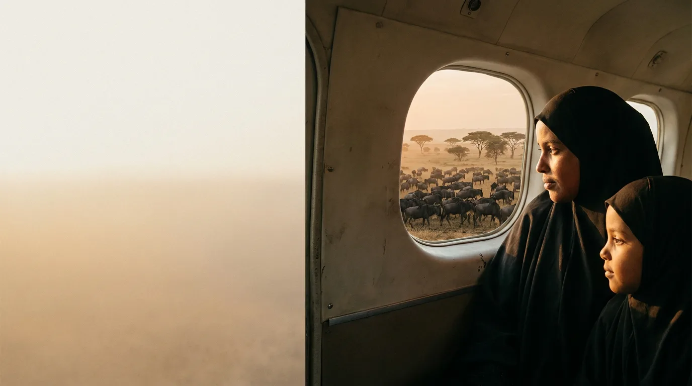
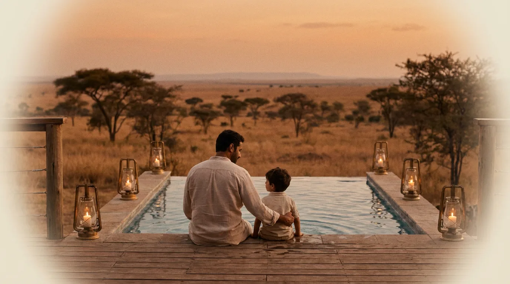
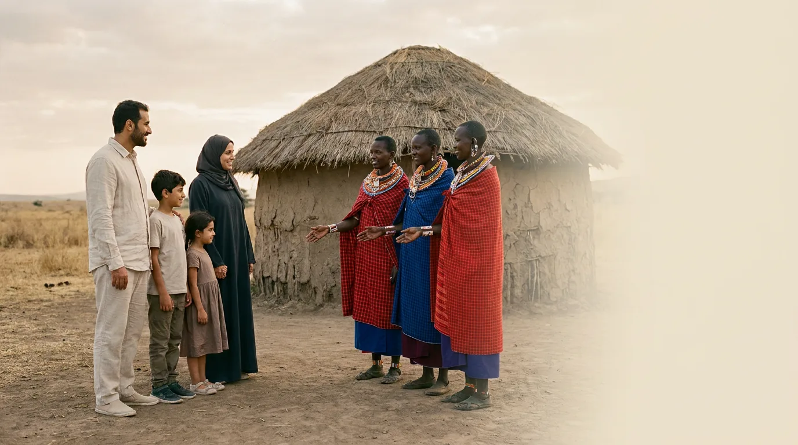
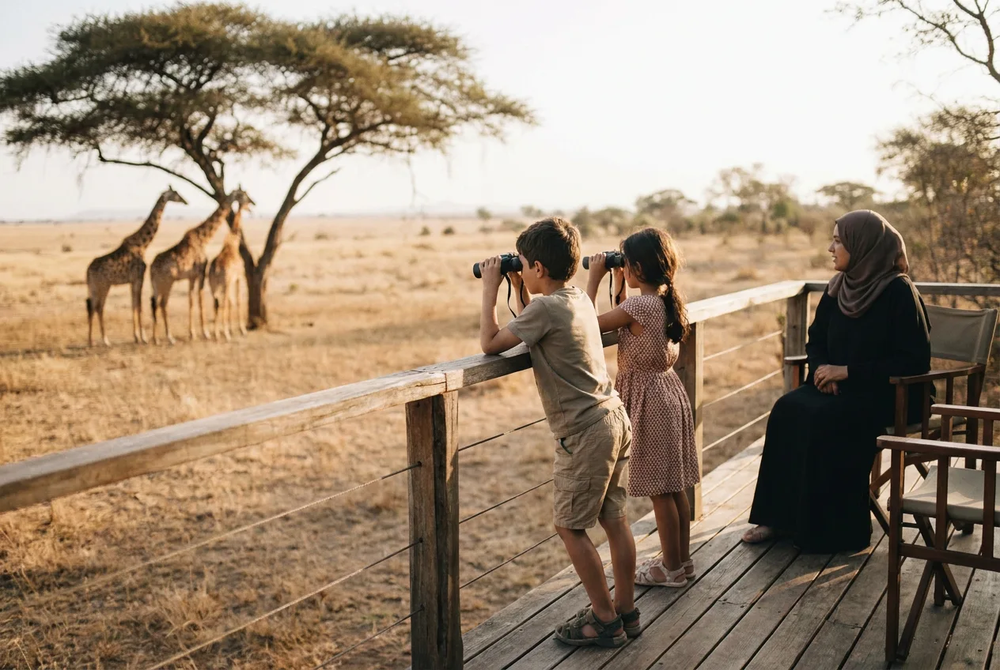
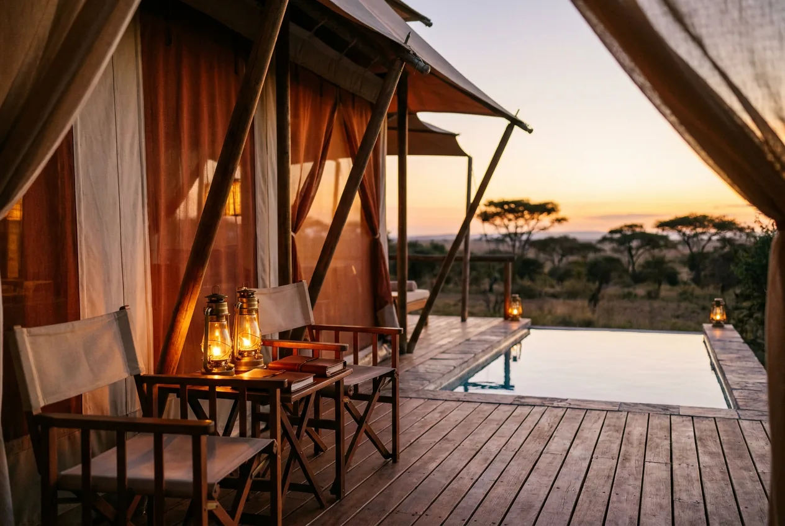

الهجرة الكبرى
تتنقّل جوًّا بين مخيّمين في السيرينجيتي، ونختار مواقع الجولات بحسب حركة القطعان. وفي البرنامج يوم في فوهة نجورونجورو وجولة بالمنطاد عند الفجر إذا سمح الطقس.
ابتداءً من 29,500 ريال سعوديأولى جولاتك في الطريق إلى المخيّم
يستقبلك مرشدك عند المهبط. ومن نافذة السيارة، ترى للمرة الأولى السهل الذي كان قبل قليل تحت جناح الطائرة.

من نافذة طائرة صغيرة، يبدو الطريق الترابي خيطًا رفيعًا في السهل. وكلما اقتربت من المهبط، اتّضحت ظلال الأشجار واتّسعت المسافة بينها. هنا تبدأ رحلتك في تنزانيا.
استلهمنا اسم «سمر» من شجرة السَّمُر التي تنمو في الجزيرة العربية وشرق أفريقيا. لعلّك تعرف ظلّها من رحلة برّ في السعودية. وفي السيرينجيتي، قد تلمح على الأفق الهيئة التي تعرفها.

قد يتوقّف المرشد عند أثرٍ حديث على الطريق، ويشير إلى الجهة التي سلكها الحيوان. وبعد قليل، تجد نفسك تراقب حركة العشب بحثًا عمّا رآه قبلك.
تستكشف السهول في سيارة خاصة بسقف قابل للرفع، مع مرشد يختار مواضع التوقّف ويحافظ على مسافة آمنة من الحيوانات. وفي أيام السفاري، تخرج عادةً في الصباح الباكر أو آخر العصر، وبين الجولات وقت للراحة في المخيّم.

قد ترى أسدًا يستريح فوق صخرة في السيرينجيتي، أو قطيع فيلة قرب نهر تارانجيري. وفي فوهة نجورونجورو البركانية، تمضي الجولة بين المراعي والبحيرات بحثًا عمّا يظهر في ذلك اليوم.
تتحرّك قطعان النوّ بحثًا عن الماء والمرعى. لها موسم ولادة في سهول الجنوب، وتعبر نهر مارا في الشمال في مرحلة من هجرتها. نختار وجهة الجولة بحسب الموسم وحركة القطعان.

بعد غبار الطريق، تستقبلك الخيمة بسرير مريح ودشّ دافئ وشرفة تطلّ على السهل. هناك متّسع لفنجان شاي وأنت تراقب كيف يتغيّر لون العشب قبل المغيب.

عند المساء، يضيق الضوء حول الخيمة. وبعد أن تطفئ الفانوس، قد تسمع ما غاب عنك في النهار، من حفيف العشب إلى نداء بعيد في السهل.
نتّفق معك قبل السفر على تفاصيل الإقامة التي تهمّك، مثل توفير سجادة صلاة ومراعاة أوقات الصلاة في برنامج اليوم.

بعد جولة الصباح، قد تختار السباحة في أحد النُّزُل أو الجلوس في الظلّ والتأمّل في السهل. وحين يلين ضوء العصر، يحين وقت الخروج من جديد.

على الشرفة، تستعيد مع رفاقك مشاهد الجولة، فيما يبرد الشاي وتظهر أوّل النجوم. أخبرنا بما يناسب مائدتك، لنتأكّد مع أماكن الإقامة من ترتيبات الوجبات الحلال وأيّ احتياجات غذائية أخرى.

يمكن ترتيب زيارة إلى قرية للماساي قرب مرتفعات نجورونجورو، بالتنسيق مع أهلها. يعرّفك مضيفوك إلى ما يرغبون في مشاركته من تفاصيل يومهم، من رعي الماشية إلى حِرَف الخرز.

بعد أيام السهول، يتّسع الأفق من جديد على المحيط الهندي. نترك في بعض رحلاتنا بضعة أيام للجزيرة، لتتمشّى صباحًا على رمل نونغوي الأبيض، أو تتأمّل الأبواب الخشبية المنقوشة في أزقّة المدينة الحجرية.
اختر المسار الأقرب إلى ما تتطلّع إليه. نساعدك في ترتيب الرحلة من الرياض أو جدة، ونراجع معك تفاصيل الإقامة والتنقّلات وتوافر مرشد يتحدّث العربية قبل الحجز.
الأسعار استرشادية للشخص بالريال السعودي. يتحدّد السعر النهائي وما يشمله بحسب موعد السفر والتوافر وتفاصيل البرنامج.
تتنقّل جوًّا بين مخيّمين في السيرينجيتي، ونختار مواقع الجولات بحسب حركة القطعان. وفي البرنامج يوم في فوهة نجورونجورو وجولة بالمنطاد عند الفجر إذا سمح الطقس.
ابتداءً من 29,500 ريال سعوديخمس ليالٍ بين تارانجيري ووسط السيرينجيتي. بعدها تطير إلى زنجبار لأربع ليالٍ على شاطئ نونغوي، حيث يمكنك أن تبدأ يومك بالمشي على الرمل قبل أن تدفأ الشمس.
ابتداءً من 34,900 ريال سعودي
ثلاثة مخيّمات بين جنوب السيرينجيتي وشماله. تقطع المسافات الطويلة بطائرة صغيرة، فيبقى وقت أطول لجولات السفاري. يتضمّن المسار جولة بالمنطاد إذا سمح الطقس.
ابتداءً من 38,500 ريال سعودي
مسافات قصيرة وجولات تتّسع لأسئلة الصغار، مع إقامة في أجنحة عائلية وثلاثة أيام على البحر. المسار لعائلة واحدة من ثمانية أفراد كحدّ أقصى، ويستقبل الأطفال من سن السادسة.
من 31,500 ريال سعودي للبالغ
يُحجز المخيّم لمجموعتك بالكامل، وتتنقّلون بطائرة خاصة. وتختتمون الرحلة في فيلا في زنجبار، مع طاهٍ ينسّق المائدة معكم. يتّسع المسار لعشرة ضيوف.
ابتداءً من 68,000 ريال سعودي
أخبرنا متى تودّ السفر، ومن سيرافقك، وأيّ المسارات لفت انتباهك. نتواصل معك لنقترح برنامجًا مبدئيًّا وتكلفة تقديرية.